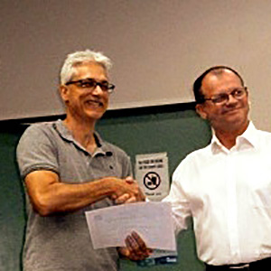

Stephen Frewen-Lord (Life member since 2015)
 Stephen has been involved with the Barrier Reef Orchestra since its inception; having played as concert master in the orchestra’s inaugural concert in 2000. Since then, he has missed only a couple of Barrier Reef Orchestra concerts, and has been concert master for most concerts.
When not rehearsing with the BRO, Stephen is involved in a number of ensembles around Townsville. He manages and plays with the Melaleuca String Quartet, directed Strings Non Troppo, and plays in Double Play – a guitar/violin duo. Stephen has had regular involvement with the Mulkadee Arts Festival, and performs regularly in community events such as Eco Fiesta, Riverfest, Heritage Day and Stable on the Strand.
In his role as concert master over the past 15 years, Stephen has enjoyed many discussions with guest conductors concerning the artistic direction of the orchestra. As a string teacher, he has encouraged many young string players to become regular members of the orchestra. Stephen loves his involvement with the orchestra, and is delighted to be joined by young players who share his passion for music. Stephen is looking forward to passing on the baton to the next BRO concert master!.